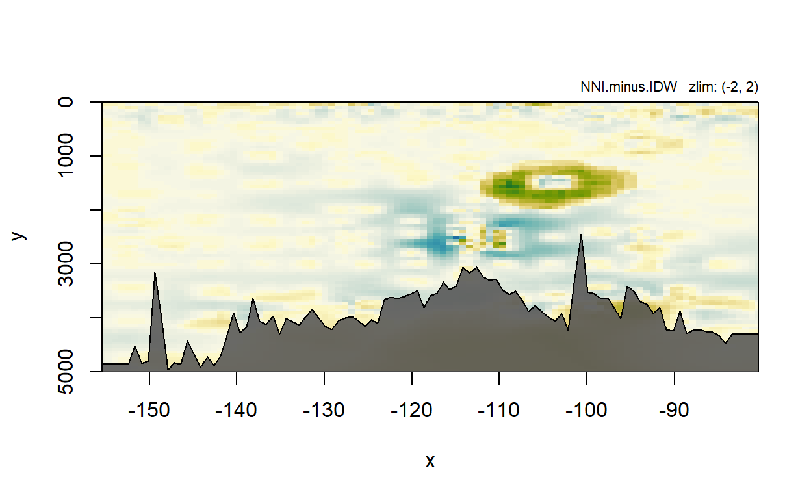

## Load in the data from BCO-DMO
# Note: the unit line is the second row, so to get the header values and the data we have to use two read operations.
data = read.csv('https://erddap.bco-dmo.org/erddap/tabledap/bcodmo_dataset_668083.csv', stringsAsFactors = F, skip = 2, header = F)
colnames(data) = read.csv('https://erddap.bco-dmo.org/erddap/tabledap/bcodmo_dataset_668083.csv', stringsAsFactors = F, nrows = 1, header = F)First, we will plot a map of the stations so we can make sense of where they are.
map = make.map(lon.min = min(data$longitude), lon.max = max(data$longitude),
lat.min = min(data$latitude), lat.max = max(data$latitude))#> Loading required package: testthat#> Loading required package: gsw#>
#> Attaching package: 'oce'#> The following object is masked from 'package:TheSource':
#>
#> bilinearInterp#> Warning in oce::mapAxis(1, longitude = lons): mapAxis(side=1) cannot draw
#> latitude labels yet; contact author if you need this#> Warning in oce::mapAxis(2, latitude = lats): mapAxis(side=2) cannot draw
#> longitude labels yet; contact author if you need thisadd.map.text(data$longitude, data$lat, data$STNNBR)Let’s plot a section using stations >=7
l = which(data$STNNBR >= 7)
section = build.section(x = data$longitude[l],
y = data$DEPTH_MAX[l],
z = data$Y_SPT_CONC_PUMP[l],
lat = data$latitude[l],
lon = data$longitude[l], field.names = 'Yttrium', x.factor = 50)#> BUILD.SECTION: Starting section building process (verbose = T).#> BUILD.SECTION: No gridder specified, defaulting to gridIDW. Other options: gridNN, gridNNI and gridKrige.#> Warning in regularize.values(x, y, ties, missing(ties), na.rm = na.rm):
#> collapsing to unique 'x' values
#> Warning in regularize.values(x, y, ties, missing(ties), na.rm = na.rm):
#> collapsing to unique 'x' values#> BUILD.SECTION: Building grid with 2601 positions and 294 observations.#> BUILD.SECTION: Building grid for field Yttrium 2021-04-16 10:52:52.#> BUILD.SECTION Timings
#> Total function time: 0.0989248752593994
#> Preprocessing Time: 0.00919580459594727
#> Gridding Time: 0.0897290706634521plot.section(section, mark.points = T, ylim = c(5000, 0), zlim = c(0,4))#> Warning in plot.section(section, mark.points = T, ylim = c(5000, 0), zlim =
#> c(0, : No field name provided, using first gridded data: Yttriumadd.section.bathy(section, bathy.col = '#555555e0')How about a higher resolution interpolation?
l = which(data$STNNBR >= 7)
section = build.section(x = data$longitude[l],
y = data$DEPTH_MAX[l],
z = data$Y_SPT_CONC_PUMP[l],
lat = data$latitude[l],
lon = data$longitude[l], field.names = 'Yttrium',
x.scale = 0.2, y.scale = 10,
x.factor = 50)#> BUILD.SECTION: Starting section building process (verbose = T).#> BUILD.SECTION: No gridder specified, defaulting to gridIDW. Other options: gridNN, gridNNI and gridKrige.#> Warning in regularize.values(x, y, ties, missing(ties), na.rm = na.rm):
#> collapsing to unique 'x' values
#> Warning in regularize.values(x, y, ties, missing(ties), na.rm = na.rm):
#> collapsing to unique 'x' values#> BUILD.SECTION: Building grid with 210375 positions and 294 observations.#> BUILD.SECTION: Building grid for field Yttrium 2021-04-16 10:52:54.#> BUILD.SECTION Timings
#> Total function time: 5.87194299697876
#> Preprocessing Time: 0.0214879512786865
#> Gridding Time: 5.85045504570007plot.section(section, mark.points = T, ylim = c(5000, 0), zlim = c(0, 4))#> Warning in plot.section(section, mark.points = T, ylim = c(5000, 0), zlim =
#> c(0, : No field name provided, using first gridded data: Yttriumadd.section.bathy(section, bathy.col = '#555555e0')And let’s add a color bar:
par(plt = c(0.1, 0.8, 0.1, 0.9))
plot.section(section, mark.points = T, ylim = c(5000, 0), zlim = c(0, 4))#> Warning in plot.section(section, mark.points = T, ylim = c(5000, 0), zlim =
#> c(0, : No field name provided, using first gridded data: Yttriumadd.section.bathy(section, bathy.col = '#555555e0')
add.colorbar(min = 0, max = 4, labels = c(1:4), pal = ocean.matter)#> Warning in par(par.original): graphical parameter "cin" cannot be set#> Warning in par(par.original): graphical parameter "cra" cannot be set#> Warning in par(par.original): graphical parameter "csi" cannot be set#> Warning in par(par.original): graphical parameter "cxy" cannot be set#> Warning in par(par.original): graphical parameter "din" cannot be set#> Warning in par(par.original): graphical parameter "page" cannot be setl = which(data$STNNBR >= 7)
section.idw = build.section(x = data$longitude[l],
y = data$DEPTH_MAX[l],
z = data$Y_SPT_CONC_PUMP[l],
lat = data$latitude[l],
lon = data$longitude[l], field.names = 'Yttrium',
nx = 100, ny = 100,
x.factor = 50)#> BUILD.SECTION: Starting section building process (verbose = T).#> BUILD.SECTION: No gridder specified, defaulting to gridIDW. Other options: gridNN, gridNNI and gridKrige.#> Warning in regularize.values(x, y, ties, missing(ties), na.rm = na.rm):
#> collapsing to unique 'x' values
#> Warning in regularize.values(x, y, ties, missing(ties), na.rm = na.rm):
#> collapsing to unique 'x' values#> BUILD.SECTION: Building grid with 10201 positions and 294 observations.#> BUILD.SECTION: Building grid for field Yttrium 2021-04-16 10:53:09.#> BUILD.SECTION Timings
#> Total function time: 0.332376956939697
#> Preprocessing Time: 0.00807404518127441
#> Gridding Time: 0.324302911758423section.NN = build.section(x = data$longitude[l],
y = data$DEPTH_MAX[l],
z = data$Y_SPT_CONC_PUMP[l],
lat = data$latitude[l],
lon = data$longitude[l], field.names = 'Yttrium',
nx = 100, ny = 100,
x.factor = 50, gridder = gridNN)#> BUILD.SECTION: Starting section building process (verbose = T).#> Warning in regularize.values(x, y, ties, missing(ties), na.rm = na.rm):
#> collapsing to unique 'x' values
#> Warning in regularize.values(x, y, ties, missing(ties), na.rm = na.rm):
#> collapsing to unique 'x' values#> BUILD.SECTION: Building grid with 10201 positions and 294 observations.#> BUILD.SECTION: Building grid for field Yttrium 2021-04-16 10:53:09.#> BUILD.SECTION Timings
#> Total function time: 0.293247938156128
#> Preprocessing Time: 0.00398993492126465
#> Gridding Time: 0.289258003234863section.NNI = build.section(x = data$longitude[l],
y = data$DEPTH_MAX[l],
z = data$Y_SPT_CONC_PUMP[l],
lat = data$latitude[l],
lon = data$longitude[l], field.names = 'Yttrium',
nx = 100, ny = 100,
x.factor = 50, gridder = gridNNI)#> BUILD.SECTION: Starting section building process (verbose = T).#> Warning in regularize.values(x, y, ties, missing(ties), na.rm = na.rm):
#> collapsing to unique 'x' values
#> Warning in regularize.values(x, y, ties, missing(ties), na.rm = na.rm):
#> collapsing to unique 'x' values#> BUILD.SECTION: Building grid with 10201 positions and 294 observations.#> BUILD.SECTION: Building grid for field Yttrium 2021-04-16 10:53:10.#> BUILD.SECTION Timings
#> Total function time: 3.48292851448059
#> Preprocessing Time: 0.00594902038574219
#> Gridding Time: 3.48282936414083section.krige = build.section(x = data$longitude[l],
y = data$DEPTH_MAX[l],
z = data$Y_SPT_CONC_PUMP[l],
lat = data$latitude[l],
lon = data$longitude[l], field.names = 'Yttrium',
nx = 100, ny = 100,
x.factor = 50, gridder = gridKrig)#> BUILD.SECTION: Starting section building process (verbose = T).#> Warning in regularize.values(x, y, ties, missing(ties), na.rm = na.rm):
#> collapsing to unique 'x' values
#> Warning in regularize.values(x, y, ties, missing(ties), na.rm = na.rm):
#> collapsing to unique 'x' values#> BUILD.SECTION: Building grid with 10201 positions and 294 observations.#> BUILD.SECTION: Building grid for field Yttrium 2021-04-16 10:56:39.#> Warning in automap::autoKrige(z ~ 1, data, new_data = grid): Removed 4 duplicate
#> observation(s) in input_data:#> coordinates z
#> 111 (-5637.517, 2200) 0.3613128
#> 112 (-5637.517, 600) 0.3796334
#> 205 (-6400.033, 20) 2.0841268
#> 275 (-7599.976, 2400) 0.3098531
#> 120 (-5637.517, 2200) 0.3797003
#> 127 (-5637.517, 600) 0.4547515
#> 213 (-6400.033, 20) 0.9608959
#> 284 (-7599.976, 2400) 0.4177608
#> [using ordinary kriging]#> BUILD.SECTION Timings
#> Total function time: 2.08923697471619
#> Preprocessing Time: 0.00799393653869629
#> Gridding Time: 2.08124303817749Let’s take a look at how the various gridding products compare graphically. The kriging product does a good job of minimizing the influence of the concentration peak around 1500m. Unfortunately, this peak also corresponds to a low-sampling resolution region in the data overall as seen in the nearest neighbor interpolation (the peak corresponds to a large polygon rather than a small one). This has a direct impact on the natural neighbor interpolation. The inverse distance interpolation falls somewhere between these two more extreme treatments of that peak with smooth transitions and a more limited zone of influence (compared to the NNI).
## Standard IDW
plot.section(section.idw, mark.points = T, ylim = c(5000, 0), main = 'IDW', zlim = c(0, 4))#> Warning in plot.section(section.idw, mark.points = T, ylim = c(5000, 0), : No
#> field name provided, using first gridded data: Yttriumadd.section.bathy(section.idw, bathy.col = '#555555e0')## NN
plot.section(section.NN, mark.points = T, ylim = c(5000, 0), main = 'Nearest Neighbor', zlim = c(0, 4))#> Warning in plot.section(section.NN, mark.points = T, ylim = c(5000, 0), : No
#> field name provided, using first gridded data: Yttriumadd.section.bathy(section.NN, bathy.col = '#555555e0')## NNI
plot.section(section.NNI, mark.points = T, ylim = c(5000, 0), main = 'Natural Neighbor', zlim = c(0, 4))#> Warning in plot.section(section.NNI, mark.points = T, ylim = c(5000, 0), : No
#> field name provided, using first gridded data: Yttriumadd.section.bathy(section.NNI, bathy.col = '#555555e0')## Krige
plot.section(section.krige, mark.points = T, ylim = c(5000, 0), main = 'Kriging', zlim = c(0, 4))#> Warning in plot.section(section.krige, mark.points = T, ylim = c(5000, 0), : No
#> field name provided, using first gridded data: Yttriumadd.section.bathy(section.krige, bathy.col = '#555555e0')
Since the sections were plotted with the same grid constraints (extent and resolution), we can simply subtract the (log) values to generate a new section. We can then plot this using the name we provide:
section.idw$grid$NNI.minus.IDW = section.NNI$grid$Yttrium - section.idw$grid$Yttrium
plot.section(section.idw, field = 'NNI.minus.IDW', ylim = c(5000, 0), zlim = c(-2, 2), pal = ocean.delta)
add.section.bathy(section.idw, bathy.col = '#555555e0')